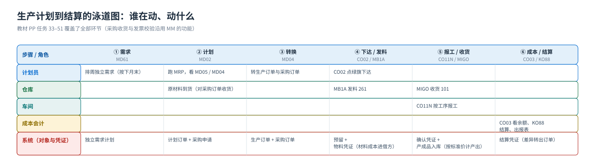
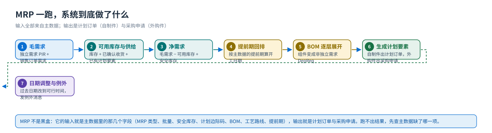

端到端流程
从独立需求到差异结算：泳道图、单据流与库存/成本影响
端到端流程一句话：需求（MD61）→ 计划（MD02 展开 → 计划订单/采购申请）→ 执行（生产订单下达 → 发料 → 报工 → 收货）→ 成本（标准成本、订单成本、差异结算）。看这张泳道图时只盯两件事：每一步谁在动、动出什么凭证；哪一步才真正改变库存和成本。
泳道图：谁在动、动什么
{kind=link}

八步单据流（每一步的 T-code 与产出）

| # | 动作 | T-code（教材任务） | 产生的对象/凭证 | 库存 | 成本与账 |
|---|---|---|---|---|---|
| 1 | 计划部门排周需求 | MD61（任务 33） | 独立需求计划（PIR） | — | — |
| 2 | 运行 MRP，按 BOM 展开 | MD02（任务 36） | 计划订单（产成品）+ 采购申请（外购件）+ 非独立需求 DepReq | — | — |
| 3 | 看供需平衡，做转换 | MD04（任务 35/37/39） | 生产订单 1000013；采购订单（供应商 10000001 等） | — | —（承诺） |
| 4 | 对采购订单收货 | MIGO（任务 40） | 物料凭证 + 会计凭证 | + 原材料 | 借存货 / 贷 GR-IR |
| 5 | 下达生产订单 | CO02（任务 42） | 订单状态 → 下达；产生预留 | 占用可用量 | 订单成为成本收集器 |
| 6 | 发料（261） | MB1A（任务 43） | 物料凭证 + 会计凭证 | − 原材料 | 借 生产成本-原材料消耗 / 贷 存货 |
| 7 | 工单确认 + 产成品收货（101） | CO11N（任务 44）· MIGO（任务 45） | 确认凭证；物成品收货（物料凭证 + 会计凭证） | + 产成品 | 报工带入作业成本；收货按标准价贷记订单产出 |
| 8 | 看订单成本 → 技术性完成 → 结算 | CO03（46）· CO02（47）· KO88（48）· KKBC_ORD（49） | 结算凭证 | — | 把订单差异结到差异科目/成本对象 |
仓库与车间是两条并行的收货线第 4 步是对采购订单收货（原材料进来），第 7 步是对生产订单收货（产成品入库）。两者都走
MIGO，但操作码不同：采购收货是「收货 → 对采购订单」，生产收货是「收货 → 订单」（教材任务 45 的画面标题就是「订单的 GR」）。教学时要让学生自己说出「这一次收货动的是哪个订单」。MRP 一跑，系统到底做了什么（教学重点）
{kind=link}

| 步骤 | 系统在算什么 | 教材画面上的证据 |
|---|---|---|
| 毛需求 Gross Requirement | 独立需求（PIR）与销售订单需求 | 任务 33 建的周需求 + 任务 35 的 DepReq |
| 可用库存与已确认收货 | 库存、采购订单/采购申请的到货、计划订单 | 任务 35 MD04 的 Stock / 计划订单 / PurRqs 行 |
| 净需求 Net Requirement | 毛需求 − 可用库存 + 安全库存 | 任务 36 的结果：每一项独立需求都安排了计划订单 |
| 提前期与回排 | 按工艺路线/主数据的生产提前期把开工日期往前排 | 任务 36 原话：非独立需求的日期考虑了生产提前期 |
| BOM 逐层展开 | 产成品的组件变成原材料的非独立需求（DepReq） | 任务 36 步骤 06：原材料 R999-100 出现许多针对 F999-100 的 DepReq |
| 生成元素 | 自制件出计划订单、外购件出采购申请（批量与安全库存参与决策） | 任务 37 转生产订单；任务 39 转采购订单 |
| 日期调整 | 过去日期的元素被改到可行日期（可勾「显示结果」重新运行） | 任务 36 原书提示：旧计划订单因开始时间在过去被修改到可行时间 |
MRP 的输入都在主数据里MRP 不是「黑盒」：它的输入就是 主数据 里那几个字段（MRP 类型、批量、安全库存、计划边际码、BOM、工艺路线、提前期），输出是计划订单与采购申请。学生 MRP 跑不出结果，八成是主数据缺字段，而不是 MRP 的问题。
库存与成本影响：PP 涉及的三类凭证与科目
| 业务动作 | 移动类型 | 库存影响 | 成本/会计影响 |
|---|---|---|---|
| 对采购订单收货 | 101 | 原材料 + 非限制库存 | 物料凭证 + 会计凭证：借存货 / 贷 GR-IR（MM 教材任务 28 的 BSX/WRX 规则） |
| 对生产订单发货（领料） | 261 | 原材料 − 库存 | 借 生产成本-原材料消耗 / 贷 存货 —— 成本进入生产订单 |
| 工单确认（报工） | —（确认凭证） | 不倒冲时为 0；勾了倒冲则同时发料并倒冲组件 | 按工作中心的作业价格把人工/机器/准备工时成本计入订单（作业价格来自 CO 的 KP26） |
| 对生产订单收货 | 101 | 产成品 + 非限制库存 | 按产成品的标准价贷记订单产出（订单的贷方） |
| 存货移库 | 311（MB1B） | 库位之间搬：生产库 → 运输库 | 同一工厂内库位转移，一般不产生 FI 凭证 |
| 订单结算 | —（结算凭证） | — | 实际成本与产出的差额（差异）结到差异科目/成本对象（任务 48） |
一句话记住 PP 的成本三段
① 事前：CK11N 按 BOM + 工艺路线算标准成本 → CK24 标记并发布，写进物料的标准价格（任务 22/23/25）。
② 事中：发料（261）与报工把实际成本压在订单的借方；产成品收货按标准价把产出放在订单的贷方（任务 43/44/45）。
③ 事后：借方 > 贷方就是订单差异，CO03 看余额、KO88 结算（任务 46/48）。PP 与 CO 的全部交集都在这三段里。
顺序错误会怎样（教学现场真实会遇到的）
| 做错的事 | 系统的反应 | 正确做法 |
|---|---|---|
| 还没下达生产订单就发料 | 订单未释放，不会有预留，发料取不到组件 | 先 CO02 下达（任务 42） |
| 没给产成品维护生产计划视图就转换计划订单 | 转换出的生产订单缺计划参数，排程与能力需求不对 | 先 MMF1 维护生产计划视图（任务 16） |
| 工艺路线里的工作中心还没关联能力 | 维护工艺路线时系统提示（任务 14 的原书提示） | 先做任务 10/12 把能力分配给工作中心 |
| 作业价格（KP26）没维护就想看订单成本 | 作业成本为 0，订单成本算不准（教材任务 12 的卡点） | 让 CO 先把 KP26 做完，再看 CO03 |
| 不先收货就想开采购发票 | MIRO 找不到收货行（基于收货的发票校验） | 先 MIGO 收货（任务 40） |
| 订单还有在制品就做技术性完成/结算 | 差异里混进在制品，结算结果看不懂 | 任务 46 看余额 → 任务 47 技术性完成 → 任务 48 结算，顺序不要跳 |
| 结算规则没维护就执行 KO88 | 报错「维护发送者的结算规则」（教材任务 48 画面就是红点错误） | 先在 KO02/KO88 维护订单的结算规则（收件人、结算类型、科目） |
教材画面（流程主线）